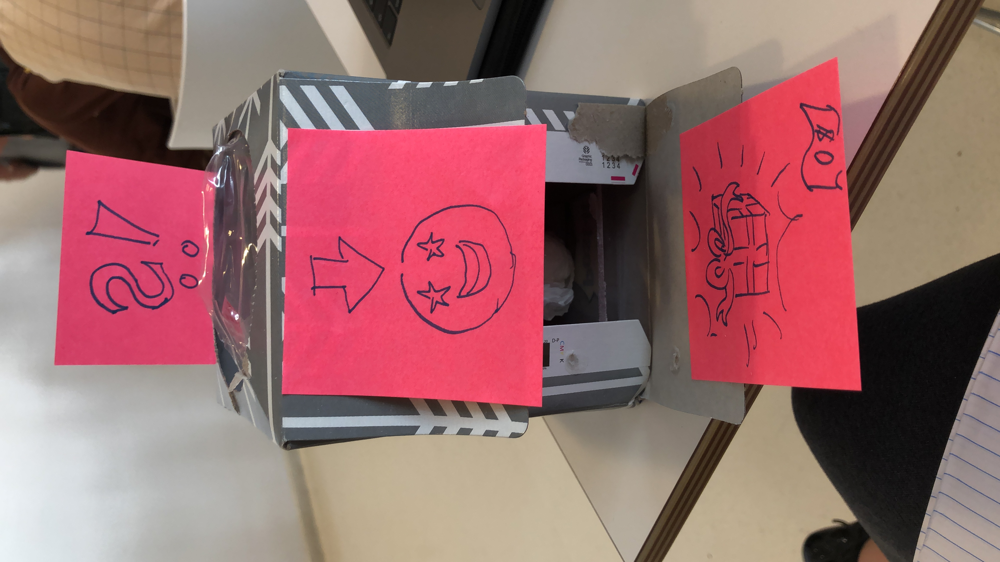

//PATRICIA PARNET
Design & Technology: Major Studio One
Instruction sets for strangers with JOE CHUNG // CHERRY HILLS x CENTRAL PARK
//PLACE
Cherry Hills is part of New York's famous Central Park and is located on the Upper Western part of the park.
The place is known for its romantic water fountain and for the great photo spots towards the castle.
It had always been a historic location for horse carriages too, because the fountain offers an accessible source of water for horses.


//MAPPING
As Cherry Hills is a circle, we were interested in the behaviour of visitors, horses, birds and dogs around.
Our target groups are tourists and native New Yorkers.

//INSTALLATION x PROTOTYPE I
Ideation is still an ongoing process, but the power of observation and creative methods helped us to come up with a couple of outstanding ideas.


The map gives us a good overview about perfect places for our installation.
//TESTING x PROTOTYPES
Ideation is still an ongoing process, but the power of observation and creative methods helped us to come up with a couple of ideas.
Our mission is to show the endless cycle of things, especially trash. We also want people to not only benefit from our concept, but also create somethings themselves.
The prototype I is made out of cardboard and trash. It looks playful and colorful.
People started to observe, touch and explore the box. But it seems like the design needs to improve in order to complete the desired interaction.

Therefore, we decided to omplement a mechanism in the second prototype.
The prototype I is made out of cardboard and trash. It looks playful and colorful.
People started to observe, touch and explore the box. But it seems like the design needs to improve visually in order to complete the desired interaction.
The prototype itself conbines the following attributes: We are all connected and We get what we put in (endless cycle)
We added a playful mechanism in order to increase the interaction and tested it in two locations later. The basic ides here was to not only insert someting, but writing a personal message and create something personEverything is still build out of trash and we included elements for
The prototype I is made out of cardboard and trash. It looks playful and colorful.